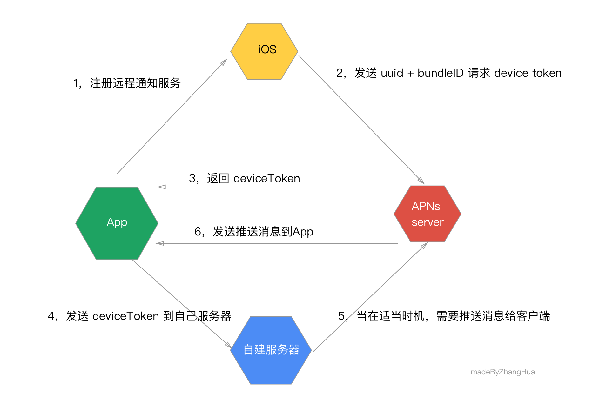

推送通知几乎是现在每个 App 都会做的功能了。平时我们使用 App 的时候大部分时候都是客户端主动去请求服务端接口，但是如果服务端想要主动发送消息给客户端，可能就要用到推送通知了。
iOS 中 Push 种类
本地Push
这种就是最常见的iOS系统通知（作用相当于传统PC端的提示窗口，在iOS10以后全部整合到UserNotifications.framework框架了），不涉及任何网络数据，仅仅是让APP拥有一个统一系统通知方式而已，比如闹钟定时提醒；
在线 Push
比如QQ、微信等IM界面处于前台时，聊天消息会通过自建的网络长连接通道推送过来。或者自己发的微博被人评论点赞，然后接收到 push 消息。这种Push在本文中暂且称为“在线Push”，需要客户端和自己公司服务端建立一个长连接；
离线/远程Push
这就是苹果公司提供的APNs这一套东西了，它使得APP处于后台或者已经被杀死的情况下仍能收到网络通知，最常见的应用场景就是IM聊天类应用。
使用苹果 APNs 推送的流程：
